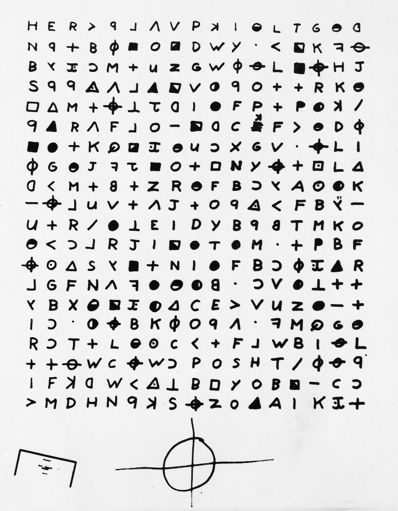

The Zodiac Ciphers
Northern California, USA — 1968 - 1969

The Event
A shadow hung over Northern California as an unidentified killer targeted victims at random, taunting the public through a series of cryptic letters and symbols. He claimed responsibility for dozens of murders, though only five are confirmed. To this day, his identity remains one of the greatest forensic mysteries of the 20th century.
Evidence Locker